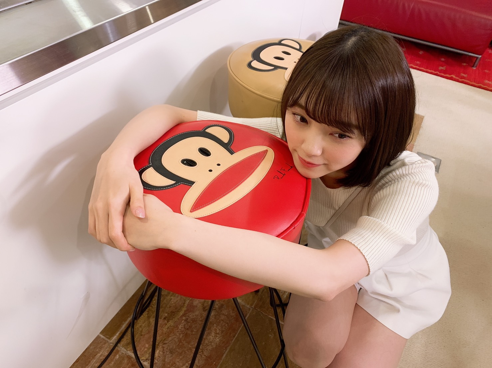
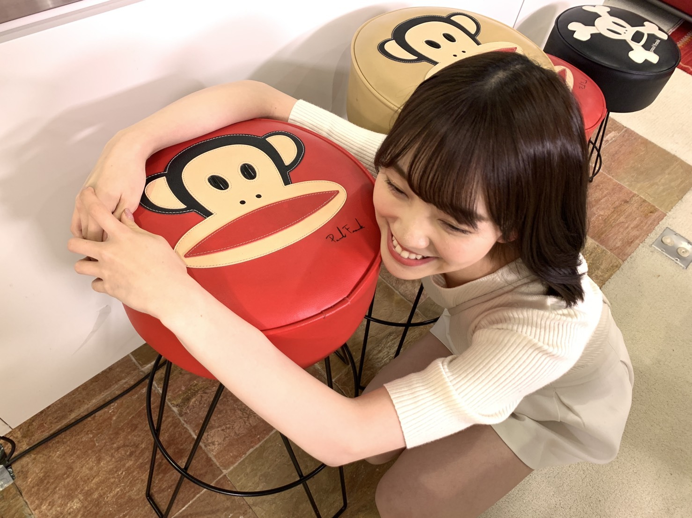
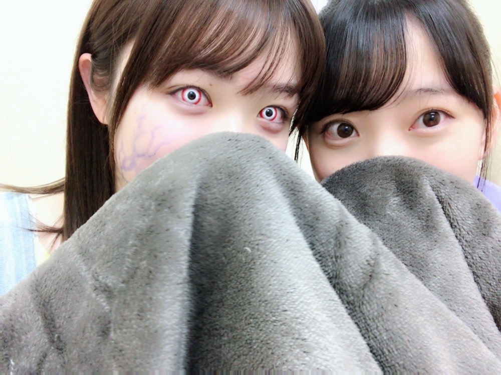
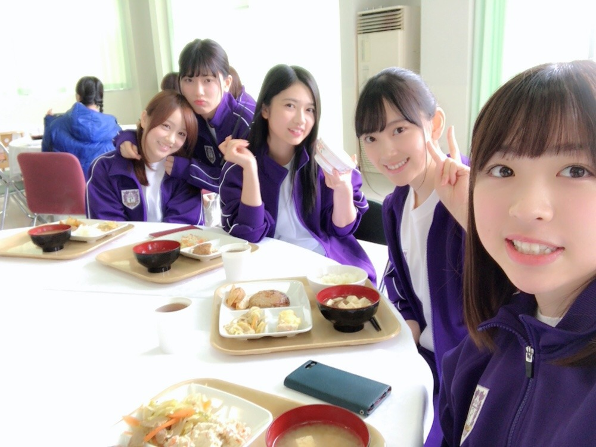
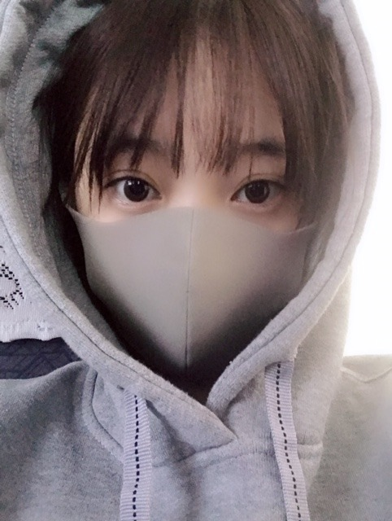

2019/0326Tue#ザンビ
先日の、坂道テレビ
見てくださりありがとうございました✨


小林由依ちゃんと齊藤京子ちゃんとお話ししてお鍋作ってまったりと貴重な時間でした！
昔から、自分からはなかなか話しかけれない人見知りでして来てくれたら仲良くなれるというか来るもの拒まずタイプなので、3人の中だと最年長だししっかりしなきゃ！話さなきゃ！とすーごい緊張してました。笑
手汗具合とか伝わってないといいな...笑
でも楽しかったのでまたおふたりと会ったらいろんなお話ししたいです☺︎
そして日テレドラマ ザンビが
明日、水曜24:59〜最終回になります！
早い...！！寂しい...

みり愛のザンビ迫力があって怖かったなぁ〜

フリージア学園の生徒、仲良しです！
いつもわいわいみんなで楽しかった！
撮影したのは一年前、
既に懐かしく感じます
是非最後までザンビを楽しんでいただけたら嬉しいです✨
本格的に連続ドラマに出させていただくのはザンビが初めてでしたがスタッフさんキャストの皆さんに支えられて日々学び、進み、充実した数ヶ月間でした☺︎
実乃梨という役に出会い、実乃梨の強さや優しさを日々感じながら演じることができて私も自分自身と向き合いながら振り返りながら過ごせました！
お芝居が好きだしもっともっとしたいと思えたし、いつの日か色んなドラマに出られるように少しずつ頑張りたいです✨
ザンビの感想お待ちしてますね〜
明日やで〜

#すっぴんフードマスク
ではははは！
2019/03/26 19:12
コメント(395)
みおな、こんばんは。更新ありがとう！ 坂道テレビ楽しかったです。お鍋美味しそうでしたね！ ザンビも最終回早いね。 では、毎日みおなに良いこと沢山ありますように！ おやすみおな！！
私、未央奈の演技好きだよ！！
ザンビも明日で最終回か～！
噛み締めて観るね(^^)
今日もお疲れさま♪
おやすみおな(*´～｀*)
ザンビも明日で最終回か～！
噛み締めて観るね(^^)
今日もお疲れさま♪
おやすみおな(*´～｀*)
未央奈ちゃんお疲れ様でーす❗この五人みんな可愛い過ぎ(((ＵωＵ｀ *)(* ´ＵωＵ)))。オテンキのりさんやバナナマンさんもアメトーク見てくれたかなあ？明日のレコメンでのりさんの感想も聞きたいね。多分、のりさんやバナナマンさんも大爆笑だっただろうなぁ‼️メンバーの感想も聞きたいなあ‼️大好きやおー
ブログ更新ありがと〜(o^^o)
今、岐阜に帰郷してます
久々のふるさと(*´꒳`*) やっぱりここが一番落ち着く…
いつものごとく岐阜城も訪れてきました。
ここからの景色が本当に好きなんです笑
坂道テレビ録画しておきました！家に帰ったら見る予定〜♪
明日家に帰ってからザンビ見る予定です(*^^*)
ホラー系は大丈夫なので、楽しく見ています笑
ホットギミックも楽しみにしてますね！
相変わらずすっぴん可愛いですね、フードも
めちゃくちゃ似合ってるよ(*´꒳`*)
でわ、今日はここら辺で
お体には気をつけてね(*^^*)
またコメントしますっ
今、岐阜に帰郷してます
久々のふるさと(*´꒳`*) やっぱりここが一番落ち着く…
いつものごとく岐阜城も訪れてきました。
ここからの景色が本当に好きなんです笑
坂道テレビ録画しておきました！家に帰ったら見る予定〜♪
明日家に帰ってからザンビ見る予定です(*^^*)
ホラー系は大丈夫なので、楽しく見ています笑
ホットギミックも楽しみにしてますね！
相変わらずすっぴん可愛いですね、フードも
めちゃくちゃ似合ってるよ(*´꒳`*)
でわ、今日はここら辺で
お体には気をつけてね(*^^*)
またコメントしますっ
みおなブログ更新ありがとう！大好き♡
坂道テレビ見たよ〜〜 料理得意なの意外だった！
３人のトークふわふわしてて癒されました♡
最近みおなちゃんが好きすぎてやばいです笑
ホットギミックの予告見て惚れました笑笑 超楽しみ！！
6／28待ちきれないよ〜〜
いつもお疲れ様です、、応援してます！！！
坂道テレビ見たよ〜〜 料理得意なの意外だった！
３人のトークふわふわしてて癒されました♡
最近みおなちゃんが好きすぎてやばいです笑
ホットギミックの予告見て惚れました笑笑 超楽しみ！！
6／28待ちきれないよ〜〜
いつもお疲れ様です、、応援してます！！！
こんばんは
すっぴん可愛い(*^O^*)
坂道テレビ見たよ。料理してる堀ちゃん見れて良かった。お鍋美味しそうやった。
ザンビ怖いけど見ちゃうんだよね。
最終回どうなるか楽しみです。
すっぴん可愛い(*^O^*)
坂道テレビ見たよ。料理してる堀ちゃん見れて良かった。お鍋美味しそうやった。
ザンビ怖いけど見ちゃうんだよね。
最終回どうなるか楽しみです。
ゆいぽんとの写真ありますか？
未央奈さん！こんばんは〜❤️❤️❤️❤️ (^o^)/ お元気そうで、何よりです！ ブログ更新！待ってましたよ〜☆彡☆彡☆彡 更新！本当にありがとうございました！m(_ _)m 今日もお仕事頑張れた？ 本当に未央奈さん！今日１日もお疲れ様〜❤️❤️❤️❤️❤️❤️❤️ 坂道TV！見ましたよ❤️❤️❤️ 未央奈さん！３人の中で、一番年長で、もうお姉さんみたいな存在になったんですネ❤️❤️❤️❤️❤️❤️❤️❤️ バレッタの時が、懐かしいですね☆彡 そして未央奈さん！食べるだけではなくて、料理も上手くて、本当に男なら誰も未央奈さんをほっときませんよね〜❤️❤️❤️ (o^^o) それに後輩達？にも未央奈さんに憧れて芸能界に入ったって、言われてましたネ❤️ （ごめんなさい！m(_ _)m 欅坂も日向坂もよく知らないんです！本当ごめんなさい‥m(_ _)m） 未央奈さんは、人見知りするって言ってますけど、番組ではちゃんと会話をリードして、上手く話を引き出せていましたよ❤️ 本当に番組！お疲れ様〜❤️❤️❤️ それからザンビは、スマホの関係で、ちゃんと観られていませんが、４月に「漫画みたいに行かない。」って、ドラマにゲスト出演されるそうですね☆彡☆彡 今回は、女子大生の役だそうで、楽しみにしています❤️❤️❤️ (o^^o) 未央奈さん！今のうちにいろいろな役に挑戦して、今後の女優人生の糧にしていって下さいネ❤️❤️❤️❤️❤️ それからar来ましたので、早速拝見してみます。 君らしさ。も重版が決定し、未央奈さん！の人気が、高まっていくのを感じて嬉しい〜❤️❤️❤️❤️❤️❤️❤️です！！ (^o^) それから未央奈さんの得意芸である「嫌な奴」！って、本当に天才的！！ですね☆彡☆彡☆彡 「魔女の宅急便」も凄かったですけれど、未央奈さんは、やはり只者ではないですね☆彡☆彡☆彡 これからも未央奈さんの魅力にどっぷりはまっていくんだろうなぁ〜❤️❤️❤️❤️❤️❤️❤️❤️❤️❤️❤️❤️❤️❤️❤️❤️ (*^_^*) じゃあ、未央奈さん！おやすみおな☆彡 今日もお疲れ様〜でした❤️❤️❤️❤️ 風邪引かないでね☆彡☆彡☆彡☆彡☆彡 ( ´ ▽ ` )ﾉ すっぴんも可愛い〜❤️❤️❤️❤️❤️❤️❤️❤️❤️❤️❤️❤️❤️❤️❤️❤️❤️❤️❤️！！！
未央奈ブログありがとう！
坂道TV見たよ！未央奈がお料理のやつでるって知ってたから見る前からすごくワクワクしてたよ！
料理してる姿もめちゃめちゃ可愛いし、家庭的なんだなって思った！！
あと人見知りって言ってたけど欅と日向の2人と楽しそうに話してるのもすごいなって思った
あとグループについての話とか、自分がどういう風になりたいかっていう話も、すごい周りのこと見れててグループのことも今後のことも、よく考えてるんだなって改めて尊敬したよ！
ザンビも最終回か〜はやいね
撮影もおつかれさま！！
どのシーンも迫力あって、釘付けでした笑
忙しいと思うけど、ゆっくり休めるときは休んで頑張ってね！
5月の幕張個握行くね〜〜！！
これからも応援してるね！頑張って！！！！！
huluでザンビ最終話みたよ♪
衝撃的な結末から
アプリゲームに繋がってくから
リリースが楽しみ！
衝撃的な結末から
アプリゲームに繋がってくから
リリースが楽しみ！
坂道テレビ見たよ～ ３人とも仲良さそうで見てて楽しかったです！！
すっぴんなのにホントにきれいですね！！
未央奈大好きです！！
すっぴんなのにホントにきれいですね！！
未央奈大好きです！！
ブログの更新ありがとう。
坂道テレビは最年長の未央奈が上手く2人をリード(トークも料理も)していて、まったく緊張しているようには見えなかったよ。
鍋は美味しそうだったな～ 未央奈の料理が食べてみたいな～
未央奈の料理が食べてみたいな～
一足先にhuluでザンビの最終回を観たけど、スゴかった
感想を書きたいけどネタバレになりそうだから、放送が終わってから書くね。
でもこれだけは言える「絶対に観た方がいい。未央奈の迫真の演技が素晴らしいから」
すでに観ている俺だけど、何度も観たいからテレビでも観るよ。
俺はダイエット&肉体改造のために、ジムに通い始めたんだよ。
まだ数回しか行ってないけど、汗を流すのが気持ち良くて、ジムは続けられそうだよ。
未央奈の次に会うのはGW(握手会)だから、それまでに少しでも痩せて、未央奈から「痩せたね」って言われるように頑張るよ。
ゴロ～
坂道テレビは最年長の未央奈が上手く2人をリード(トークも料理も)していて、まったく緊張しているようには見えなかったよ。
鍋は美味しそうだったな～
一足先にhuluでザンビの最終回を観たけど、スゴかった
感想を書きたいけどネタバレになりそうだから、放送が終わってから書くね。
でもこれだけは言える「絶対に観た方がいい。未央奈の迫真の演技が素晴らしいから」
すでに観ている俺だけど、何度も観たいからテレビでも観るよ。
俺はダイエット&肉体改造のために、ジムに通い始めたんだよ。
まだ数回しか行ってないけど、汗を流すのが気持ち良くて、ジムは続けられそうだよ。
未央奈の次に会うのはGW(握手会)だから、それまでに少しでも痩せて、未央奈から「痩せたね」って言われるように頑張るよ。
ゴロ～
マスク、お揃いやん
堀ちゃんこんばんはー！
ザンビ楽しく観させて頂いています！みり愛ちゃん怖！
すごくビックリしましたーでも明日のレコメンとザンビ楽しみにしてまーす！
すっぴん凄く可愛いです！
ザンビ楽しく観させて頂いています！みり愛ちゃん怖！
すごくビックリしましたーでも明日のレコメンとザンビ楽しみにしてまーす！
すっぴん凄く可愛いです！
お鍋だったか～～
ラーメンは作らなかったんですね(笑)
え？しめ？
くっ！手汗が映っていれば･･･
お姉さんしてたな～～
一年前なんですね。
作中でも止まらない人。いましたね(笑)
連ドラ。
お待ちしてます。
ラーメンは作らなかったんですね(笑)
え？しめ？
くっ！手汗が映っていれば･･･
お姉さんしてたな～～
一年前なんですね。
作中でも止まらない人。いましたね(笑)
連ドラ。
お待ちしてます。
みおな〜！すっぴんも可愛いのー
ザンビ撮影したの1年前なんだ！驚きました
テレビ組なので明日だー！楽しみです！
楽しみすぎる〜！
ザンビ撮影したの1年前なんだ！驚きました
テレビ組なので明日だー！楽しみです！
楽しみすぎる〜！
ブログ更新ありがとう。
坂道TV見ました、可愛かったよ。
すっぴん画像大変きになります、すっぴんも絶対かわいいと確信しました。
次回のブログ更新を楽しみにしてます。じゃあね。
坂道TV見ました、可愛かったよ。
すっぴん画像大変きになります、すっぴんも絶対かわいいと確信しました。
次回のブログ更新を楽しみにしてます。じゃあね。
坂道テレビ見ました！
とてもよかったよ！
あまり緊張しているようには見えなかったよ！
頑張ってね！
とてもよかったよ！
あまり緊張しているようには見えなかったよ！
頑張ってね！
すっぴん超可愛いね。
坂道テレビ見たよ〜。かなり喋ってたね。いい感じでした。
ずっと応援してます(ﾉ∀︎＼*)ｷｬ
坂道テレビ見たよ〜。かなり喋ってたね。いい感じでした。
ずっと応援してます(ﾉ∀︎＼*)ｷｬ
ブログ更新ありがとう
坂道テレビでの未央奈のお姉さん感
よかったよ
ザンビhuluで最終回見たよ
堀ちゃん完全に女優だね
ドラマで堀ちゃんいっぱい見たいな
坂道テレビでの未央奈のお姉さん感
よかったよ
ザンビhuluで最終回見たよ
堀ちゃん完全に女優だね
ドラマで堀ちゃんいっぱい見たいな
更新有難う！
御疲れ様でした！
未央奈が何時も可愛い、
坂道テレビ良いと思の思うのは、
最高だった。
Huluを通してザンビの最終回を観ました。
良いと思います。
今年の6月にホットギミックを楽しみにしています。
其の為なら、日本へ戻ります。
何時も頑張って下さい、
常に必ずしても応援しています。
ずっと大好き！
御疲れ様でした！
未央奈が何時も可愛い、
坂道テレビ良いと思の思うのは、
最高だった。
Huluを通してザンビの最終回を観ました。
良いと思います。
今年の6月にホットギミックを楽しみにしています。
其の為なら、日本へ戻ります。
何時も頑張って下さい、
常に必ずしても応援しています。
ずっと大好き！
未央奈！
坂道テレビ見ました！
最初は緊張感めちゃくちゃあったけど、お鍋を作っている時ぐらいから、和らいできたなぁって思いながら見てました！
お鍋、美味しそうだったなぁ～。
ところで写真の椅子はお猿さんが書いてあるから抱きついてるのかな？笑
ザンビ、明日が最終回か～。
早いな～。
実乃梨がどうなってしまうのか、ソワソワしてるよ。
明日が待ち遠しいです。
坂道テレビ見ました！
最初は緊張感めちゃくちゃあったけど、お鍋を作っている時ぐらいから、和らいできたなぁって思いながら見てました！
お鍋、美味しそうだったなぁ～。
ところで写真の椅子はお猿さんが書いてあるから抱きついてるのかな？笑
ザンビ、明日が最終回か～。
早いな～。
実乃梨がどうなってしまうのか、ソワソワしてるよ。
明日が待ち遠しいです。
坂道テレビ堀ちゃんリードしてるのすごいよかったし
料理も手際よくて最高でした！
すっぴんかわいすぎ
料理も手際よくて最高でした！
すっぴんかわいすぎ
坂道テレビで鍋作りながら、色んな話してて
未央奈ちゃんは人見知りだと驚いた。人見知りってなかなか治んないのかな？
他のグループの人達とは話すのは苦手？
乃木坂同士だったら上手く話せるのかな？
未央奈ちゃんは人見知りだと驚いた。人見知りってなかなか治んないのかな？
他のグループの人達とは話すのは苦手？
乃木坂同士だったら上手く話せるのかな？
こちらでは放送してないので、DVDが発売されたら買って観たいと思います。
坂道テレビ見た。堀ちゃんを見れて嬉しかった。
お疲れ様です！
急な不意打ちの笑顔はやっぱ強すぎる…
大阪全握行くから楽しみです！！！
お仕事大変だと思うけど、体調に気を付けてください！
またね！
急な不意打ちの笑顔はやっぱ強すぎる…
大阪全握行くから楽しみです！！！
お仕事大変だと思うけど、体調に気を付けてください！
またね！
明日で最終回ってあっという間だったねー(^^)
毎回欠かさず観てきてるから、終わってほしくなかったなぁ
明日の最終回は楽しみにしてるし、未央奈のすっぴんマスク写真も見れたし（＾ν＾）笑笑
言うことナシ( ◠‿◠ )
毎回欠かさず観てきてるから、終わってほしくなかったなぁ
明日の最終回は楽しみにしてるし、未央奈のすっぴんマスク写真も見れたし（＾ν＾）笑笑
言うことナシ( ◠‿◠ )
ブログ更新ありがとうございます！
先週の握手会ありがとうございました！
今週の握手会には行けないですけれども、美彩さんの最後を飾って上げて下さい！
先週の坂道TVとアメトーク録画しました！
それではお休みなさい！
ブログ更新、ありがとうございます！
坂道テレビ見ました！堀さんと齋藤さんと小林さんが鍋を作ったり、楽しそうに話しているのがとても新鮮で坂道グループはやっぱり仲がいいんだなと、改めて思いました！
ザンビもいよいよ明日ですね！ドラマではすごくシリアスで緊張感のある場面が多く、見てるこっちも手に汗握る展開ですが、休憩中の写真などはみんなが笑顔でとてもほっこりとした気持ちになりました！
最近、本当にテレビで堀さんのご活躍を拝見しています!今後も映画や番組などで、大大大活躍することを心から願っています!
最後になりますが、季節の変わり目で体調を崩しがちですが、お身体にお気を付けてこれからも頑張ってください!応援してます!次のブログ更新も楽しみにしてます!
坂道テレビ見ました！堀さんと齋藤さんと小林さんが鍋を作ったり、楽しそうに話しているのがとても新鮮で坂道グループはやっぱり仲がいいんだなと、改めて思いました！
ザンビもいよいよ明日ですね！ドラマではすごくシリアスで緊張感のある場面が多く、見てるこっちも手に汗握る展開ですが、休憩中の写真などはみんなが笑顔でとてもほっこりとした気持ちになりました！
最近、本当にテレビで堀さんのご活躍を拝見しています!今後も映画や番組などで、大大大活躍することを心から願っています!
最後になりますが、季節の変わり目で体調を崩しがちですが、お身体にお気を付けてこれからも頑張ってください!応援してます!次のブログ更新も楽しみにしてます!
他のグループとの対談ってなんか新鮮で良かった。定期的に見たいですねー
坂町テレビめっちゃよかった！
未央奈ちゃん！
ザンビはみんなの演技がうますぎて怖いです
最終回楽しみにしています！
すっぴんでもこんなに可愛いって神！
大好きです！
ザンビはみんなの演技がうますぎて怖いです
最終回楽しみにしています！
すっぴんでもこんなに可愛いって神！
大好きです！
みおちゃんブログ更新ありがとう♪
ザンビ福岡見れないから見たかった……笑
DVD出たら買いたいなぁ
みおちゃんの演技ホットギミックでたっぷり観るぞー￨ω･)
あ、もちろん乙女神楽事前予約したよー＼(^o^)／めちゃくちゃ楽しみじゃよ(^-^)
ザンビ福岡見れないから見たかった……笑
DVD出たら買いたいなぁ
みおちゃんの演技ホットギミックでたっぷり観るぞー￨ω･)
あ、もちろん乙女神楽事前予約したよー＼(^o^)／めちゃくちゃ楽しみじゃよ(^-^)
可愛すぎ！
みおなお疲れ！
Huluで一足先にザンビ最終回見たんやけど、感動して泣いてしまった。
ここでは内容は言えんけど、すごく心に響きました！
楽しかったです、ありがとう☺️
Huluで一足先にザンビ最終回見たんやけど、感動して泣いてしまった。
ここでは内容は言えんけど、すごく心に響きました！
楽しかったです、ありがとう☺️
すっぴん可愛いすぎて眩しい
坂道テレビ良かったです✨
坂道テレビ良かったです✨
みおなちゃんー！
ブログ更新してくれてありがとうございます！
ザンビ最終回ですね、、、
みのりちゃんどうなるのですかね、、
血が、、、
ザンビになってしまうのか、、？
気になっちゃいますー！
みりあさんのザンビ迫力やばかったですね！
うわっ！！ってなりました！
坂道テレビ見ました！
可愛すぎてやばかったです！
ももかNo.7
ブログ更新してくれてありがとうございます！
ザンビ最終回ですね、、、
みのりちゃんどうなるのですかね、、
血が、、、
ザンビになってしまうのか、、？
気になっちゃいますー！
みりあさんのザンビ迫力やばかったですね！
うわっ！！ってなりました！
坂道テレビ見ました！
可愛すぎてやばかったです！
ももかNo.7
未央奈、ブログ更新ありがとう♪♪
もうザンビは最終回なんだね。
ただ、放送してなくて見れてないm(__)m
DVD出ないかな⁈(笑)
最後のスッピンは反則だぁ〜!!
可愛すぎ(//∇//)
もうザンビは最終回なんだね。
ただ、放送してなくて見れてないm(__)m
DVD出ないかな⁈(笑)
最後のスッピンは反則だぁ〜!!
可愛すぎ(//∇//)
huluでザンビ最終話見ました！衝撃の結末で驚きました！すごい面白かったです！
坂道テレビのお猿さんの椅子見て、堀ちゃんが好きだからかな〜と思ってました！
坂道テレビのお猿さんの椅子見て、堀ちゃんが好きだからかな〜と思ってました！
坂道テレビ楽しかったなぁ～。是非続編もあってほしいなぁ～。
こんばんは。ブログ更新ありがとうございます。
坂道テレビ見ましたよー。料理できるのが未央奈ちゃんだけって、いきなりハードルが高かったですね。坂道テレビの第2弾があれば良いなと思います。二人にもまた会えたら、もっと仲良くできると思います。
ザンビ最終回か～。楽しい？事はすぐに終わっちゃいますよね。またいつか乃木坂46主演のドラマなり映画なり舞台があると良いなと思います。
ではまた。
坂道テレビ見ましたよー。料理できるのが未央奈ちゃんだけって、いきなりハードルが高かったですね。坂道テレビの第2弾があれば良いなと思います。二人にもまた会えたら、もっと仲良くできると思います。
ザンビ最終回か～。楽しい？事はすぐに終わっちゃいますよね。またいつか乃木坂46主演のドラマなり映画なり舞台があると良いなと思います。
ではまた。
未央奈ちゃん、こんばんは。坂道テレビ見たよ！今まで以上に、未央奈ちゃんが考えていることがわかって良かったよ。最近一段と綺麗になってるしね。乃木坂がどんどんスケールアップして、乃木坂の女の子たちがどんどん綺麗になる理由がわかる気がした。未央奈ちゃん、白いな！画面で見て思った。乃木坂の女の子は化粧とか、美容とか白くなる理由はあるんだろうな。美月ちゃんやきぃちゃんも頑張ってたね。２人とも堂々としてるなぁ。と思った。３人とも素敵だった。インタビューに答えてた白石さんの西野さんへの思いとか、桜井キャプテンのこれまた貴重なキャプテン対談など、見応えあった。欅坂の小池さん、守屋さんが見に来てくれてるのも良かった。またね！
坂道テレビで本当に人見知り？って言うくらい未央奈が引っ張っていたのでとてもスゴいなと思いました！
すっぴんも可愛いですよー笑
すっぴんも可愛いですよー笑
かわいい！
堀ちゃん、大好きだよー
ザンビ最終回楽しみ!!
みおちゃんのオススメのパーカーをブログに書いて欲しいです！お願いします！
すっぴんフードマスクの
人見知りの堀未央奈さん
ブログ更新ありがとう⁉︎
お部屋の片付けお疲れ様でした。
季節も変わるからやるとスッキリ
するね⁉︎(^ ^)
俺もやらなきゃ〜〜
坂道テレビでは鍋美味しそうでしたね⁉︎
未央奈ちゃんの手料理食べたいなぁ〜
そして残美もラスト楽しみ〜〜⁉︎
その前にレコメンですね⁉︎(^ ^)
人見知りの堀未央奈さん
ブログ更新ありがとう⁉︎
お部屋の片付けお疲れ様でした。
季節も変わるからやるとスッキリ
するね⁉︎(^ ^)
俺もやらなきゃ〜〜
坂道テレビでは鍋美味しそうでしたね⁉︎
未央奈ちゃんの手料理食べたいなぁ〜
そして残美もラスト楽しみ〜〜⁉︎
その前にレコメンですね⁉︎(^ ^)


ザンビ最終回すごく寂しいなぁ。めっちゃおもしろかった！！
乃木坂メンバーの仲良い写真すごく大好きです！！！癒される！！